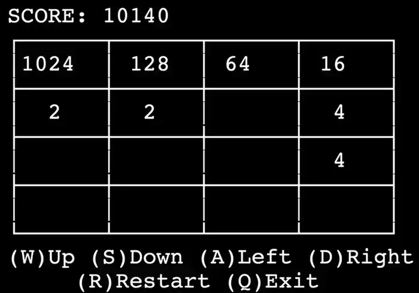
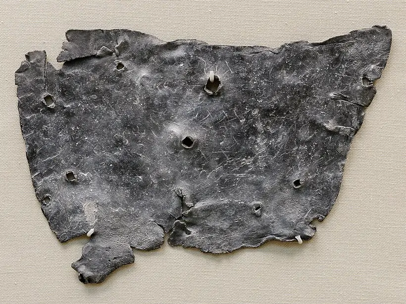

The mummy's curse, as a cohort study
When Howard Carter opened Tutankhamun's tomb in 1922, the excavation's sponsor — George Herbert, fifth Earl of Carnarvon — died five months later, aged 57. The cause was a mosquito bite on the cheek that became infected after he cut it shaving, then pneumonia and multi-organ failure. Sir Arthur Conan Doyle, a convinced spiritualist, suggested “an evil elemental”. The press had its story.
Maps, diagrams and images




Fiction supplied the best line: Marie Corelli's “death comes on wings to he who enters the tomb of a pharaoh”, which was quickly reported as an inscription over the tomb door. No such inscription has ever been found, and as Egyptologist Joyce Tyldesley points out, in a country where perhaps 5% of people could read, a written warning would have been a poor deterrent to robbers.
Everything else about the story has the same texture. The lights allegedly going out across Cairo at the moment of death: power cuts were routine. Carnarvon's dog howling and dying at the same instant: the dog died four hours later, and there is a time zone.
And then somebody actually tested it. In 2002, the epidemiologist Mark R. Nelson published a historical cohort study in the British Medical Journal. He identified the 44 Westerners Carter recorded as present during the relevant period, split them into 25 who were “exposed” (entered the long-sealed area) and the rest, and tracked their obituaries.
“In the 25 people exposed to the curse the mean age at death was 70 years … compared with 75 in those not exposed. … There was no significant association between exposure to the mummy's curse and survival.”Nelson, BMJ, 2002
Howard Carter himself lived sixteen more years and died at 64. Lady Evelyn Herbert, present at the first clandestine entry into the burial chamber, died in 1980.
Amityville: a real murder, then a product
The house at 112 Ocean Avenue is real and so is the tragedy: in November 1974, Ronald DeFeo Jr killed six members of his family there. That much is a matter of court record. Everything after it is a different kind of document.
In 1977 the Lutz family, who had bought the house, left after 28 days and described a haunting: voices, green slime, levitation, a demonic presence. A book followed, then a film, then a franchise.
The case fell apart in the ordinary way — in litigation. The Society for Psychical Research's encyclopaedia entry records that a New York judge remarked the bestselling book appeared to be largely a work of fiction shaped by the family lawyer's suggestions, and that the participants' accounts changed under oath. The SPR — hardly a body hostile to the paranormal — files the case as a hoax.
What survives is not evidence of a haunting. It is evidence of a business model: a real crime, a marketable story, and a house whose address is now worth more than the book.
The Hope Diamond
The Smithsonian, which owns it, is refreshingly direct on its own website: “Is the Hope Diamond cursed? Of course not!” The curse is a twentieth-century invention, and the museum can date its arrival — a Washington Post article of 19 January 1908, “Remarkable Jewel a Hoodoo — Hope Diamond Has Brought Trouble to All Who Have Owned It”.
The gem's actual history involves the French crown jewels, a sale during the Revolution, and a series of owners including a Washington socialite, Evalyn Walsh McLean. It does not involve a consistent trail of ruin. The Smithsonian notes that the popular list of victims is “wildly inaccurate”, assembled by later writers from a mixture of real misfortune and invented owners.
It is a beautiful object with a documented provenance and a manufactured legend, which makes it the most honest curse in the archive: the institution holding it publishes the debunk on the same page as the object.
Start with a real tragedy. A death, a murder, a disaster. That is the anchor.
Collect coincidences after the fact. Any death connected to the object, at any distance, at any date. No denominator is ever counted — how many people touched the object and were fine?
Add a sentence nobody wrote. The tomb inscription, the warning, the clause in the will. It will be quoted forever.
Let a reputable person believe it. Conan Doyle was a great writer and a credulous spiritualist; his endorsement travelled further than the correction.
Notice that the third and fourth steps are exactly the mechanism in the urban legend dossier, and that the second step is the base-rate error that makes the Bermuda Triangle work.
Curses that were real
Two kinds of curse have genuine effects, and neither is supernatural. Tomb curses in ancient Egypt were real inscriptions intended to deter robbers — a social technology, not a spell. And “cursed” objects in the modern sense have a documented power: they attract theft, obsession and litigation, which is why so many of them are in museums behind glass.
The 27 Club: a curse with a denominator
Brian Jones, Jimi Hendrix, Janis Joplin, Jim Morrison, Kurt Cobain and Amy Winehouse all died at 27. The pattern is striking, frequently called a curse, and dissolves the moment you ask how many musicians reach 27 and survive it.
Three things are happening at once. First, young adulthood is when accidental and substance-related deaths peak for this population, so a cluster around the late twenties is not surprising — it is roughly where you would expect the deaths to be. Second, the club is selected after the fact: nobody counts the hundreds of musicians who died at 26 or 28, or who lived to 80. Third, fame concentrates the sample: we remember the famous ones, and famous young musicians are exactly the people with the lifestyle risks.
Statistical treatments of the question have generally found no excess of deaths at 27 once the base rate is accounted for — the “club” is a list, not a distribution. Compare the Bermuda Triangle, where the same denominator problem produces the same kind of legend.
It is worth adding that the individual tragedies are real, and that several of these deaths were preventable in ways that had nothing to do with numerology — addiction, untreated mental illness, exploitative management. The curse is the least interesting true thing about them.
Sources for this page
- Nelson, M. R. (2002), “The mummy’s curse: historical cohort study”, BMJpmc.ncbi.nlm.nih.gov
- JSTOR Daily, “Was It Really a Mummy’s Curse?”daily.jstor.org
- University of Manchester, “90th anniversary of the curse of Tutankhamen — how a modern myth was born”manchester.ac.uk
- The Lancet (2003), “The death of Lord Carnarvon”thelancet.com
- HistoryExtra, “Howard Carter’s discovery of Tutankhamun’s tomb”historyextra.com
- Psi Encyclopedia (Society for Psychical Research), “Amityville Hoax”psi-encyclopedia.spr.ac.uk
- Smithsonian National Museum of Natural History, “History of the Hope Diamond”naturalhistory.si.edu
- Al-Ahram Weekly, “The curse of the Pharaohs?” — Egyptian tomb curses in contextenglish.ahram.org.eg
Open resources on this topic
- BookORACLES, CURSES, & RISK AMONG THE ANCIENT GREEKS — Esther Eidinow · 2007 (Internet Archive, free to read)
- BookSins,Curses and Consecration — FRANCIS THEKKEKKARA · 2019 (Internet Archive, free to read)
- BookThe Seven Curses of London — James Greenwood (Internet Archive, free to read)
- PapersOpen-access articles: DOAJ · PubMed Central · Internet Archive Scholar
- BooksPublic-domain and borrowable copies: Open Library · Project Gutenberg · Google Books
Cite this page
Momin, S. (2026). Curses. The Larger World Archive. https://drsamonline.github.io/LARGE_GLOBE/curses.htmlMomin, Sohil. “Curses.” The Larger World Archive, 2026, https://drsamonline.github.io/LARGE_GLOBE/curses.html.Momin, Sohil. “Curses.” The Larger World Archive, 2026. https://drsamonline.github.io/LARGE_GLOBE/curses.html.@misc{curses2026curses,
author = {Momin, Sohil},
title = {Curses},
year = {2026},
howpublished = {The Larger World Archive},
url = {https://drsamonline.github.io/LARGE_GLOBE/curses.html},
note = {Last reviewed 20 November 2026}
}Last reviewed 20 November 2026 · Corrections policy · this page is not peer reviewed